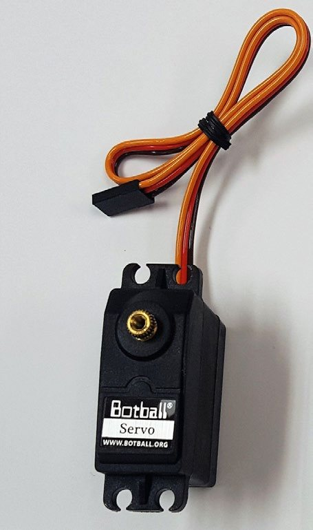

Discovery Projects · Systems · Project 2
What Makes a Robot a Robot?
Harder to answer than it sounds — and the answer is a list of six things.
Student PIN:
Try It Robot or Not?
Go down this list. For each one, decide yes or no — and write the reason that made you choose.
Do this on your own first. No talking yet.
| Is this a robot? | Yes / No | Because… |
|---|---|---|
| A robot vacuum cleaner | ||
| A washing machine | ||
| A remote-control car | ||
| A thermostat on the wall | ||
| A factory welding arm | ||
| A doll that talks when you pull a string | ||
| A self-checkout till | ||
| A drone flown by a person | ||
| A car that parks itself | ||
| Your Wombat, sitting switched off |
Now argue
Turn to the person next to you and compare. Find one you disagreed on and try to talk each other round.
Which one did you disagree about most?
Did either of you change your mind? What was the argument that did it?
You Have Been Using a Rule Without Saying It
To answer any of those, you had to have some idea in your head of what a robot is. You have never written it down.
Do it now, in one sentence: a robot is…
My definition of a robot:
Learn It Six Things Every Robot Has

People have argued about the definition of "robot" for a hundred years and have not settled it. But engineers agree on something more useful: what a robot is made of.
Every robot — yours, a factory arm, a Mars rover — has these six.
Holds everything together and holds the sensors in position. Your skeleton does this job.
Joints usually have an actuator attached — the robot's equivalent of a muscle.
Chassis, brackets, frame
An effector changes the state of the robot, or changes the state of the world.
Motors, arms, legs, thrusters — and also buzzers, lights, and speakers
How the robot finds things out instead of assuming.
Some report on the world. Some report on the robot itself.
Touch, light, range
Where the energy comes from, how it gets around, and how it is kept steady.
Batteries, solar panels, springs, hydraulics — and the wires and regulators that move and manage it
The part that reads the sensor values, works out what they mean, and decides which effector command to send.
Your Wombat's processor
What the robot knows. How to read its sensors, how to build commands, what has happened so far — and the program that decides what it does.
Your code
Computation and Information Are Not the Same Thing
Computation is the machinery that thinks. Information is what it thinks about and what it thinks with.
Same Wombat, different program, completely different robot. The hardware did not change — the information did.
Two kinds of sensing
You Will Meet Both in the Coding Strand
The touch sensor and the light sensor look outward. But the counter inside each motor, telling the robot how far its own wheels have turned, looks inward — that one is proprioceptive.
Same idea as knowing where your hand is without looking at it.
Do It Find the Six
-
Snowball your definition
Copy your one-sentence definition from Try It onto scrap paper. No name on it.
Screw it into a ball. On the count of three, everyone throws. Pick up whichever one lands near you.
Read it. Now improve it — add something it missed, or cut something that is not really needed.
The definition I picked up said:
What I changed, and why:
Throw again. Do it twice more. Then read a few out to the class.
After hearing everyone's, what does the class definition need that yours did not have?
-
Become the expert on one component
Split the six components across your team, one each — or one per pair if you are a small team.
Yours is the one you have to explain to everybody else. Write it in your own words, not copied from above, and find one example that is not on this sheet.
Question My answer My component In my own words An example nobody gave me What breaks without it Teach yours. Take notes on the other five as they are taught.
-
Match it up
People and robots solve the same problems in different materials. Match each one on the left to its opposite number on the right.
People- Bones
- Muscles
- Senses
- Brain
- Digestion and breathing
- Knowledge
Robots- Computer
- Power
- Computer program
- Sensors
- Effectors
- Mechanical structures
People Robots — letter Why that one 1 · Bones 2 · Muscles 3 · Senses 4 · Brain 5 · Digestion and breathing 6 · Knowledge Two of those pairs are much harder to justify than the others. Which two, and what makes them awkward?
-
Find all six in your own kit
Back to the table. For each component, point at the actual part.
Component In my kit, this is… Do I have more than one option? Structure Effectors Sensors Power Computation Information ⚠ One of Them Is Not in the Box
Five of these you can hold. One of them you have not made yet.
Which one — and what does that tell you about who finishes building this robot?
-
Take one away
Pick any of the six and imagine your robot without it. Describe what is left.
Remove this What the robot could still do, and what it could not Which one, taken away, stops it being a robot at all — rather than just a worse robot?
-
Go back to your list
Return to the ten things in Try It. Run each one through the six components and see how many it actually has.
Thing How many of the six? Any I would change my mind on? A washing machine A remote-control car A thermostat A talking doll Did having the six components make the arguments easier to settle, or did it just move them somewhere else?
-
Robots at home
As a class, list every robot you can find in your homes and around your community. Push past the obvious ones.
Where I found it What it does How many did the class find that nobody would have called a robot an hour ago?
Score It Checkpoint
Name the component
| This part of a robot… | Which of the six? |
|---|---|
| Holds the sensors where they need to be | |
| Reads a value and works out what to do about it | |
| Changes something about the world outside the robot | |
| Keeps the voltage steady on the way to the motors | |
| Remembers what has happened so far this run | |
| Tells the robot the wall is right there |
External or proprioceptive?
| Sensor | Which kind? |
|---|---|
| A touch sensor on the front bumper | |
| The counter inside a motor tracking how far the wheel turned | |
| A light sensor reading the mat | |
| A battery meter reporting charge left |
Can you do it again?
Think about it
Look at the definition you wrote at the start of Try It. Would you write it the same way now?
A washing machine has structure, effectors, sensors, power, computation, and information. So does a Mars rover. If they both have all six, what is actually different between them?
Your Wombat sits on the table, switched off, with no program in it. Is it a robot yet? Does your answer change once you write the code?
Next
You have found that some machines do what they are told the instant you tell them, and some are left to get on with it alone. That difference has a name, and it turns out to matter more than almost anything else.
In Systems Project 3 — Who's Driving?, you sort the world into three kinds of control.
You are also ready for Coding Project 3, where the effectors on your own robot start turning.
KIPR · Botball Explorer — Discovery Projects · © KISS Institute for Practical Robotics 1997–2026